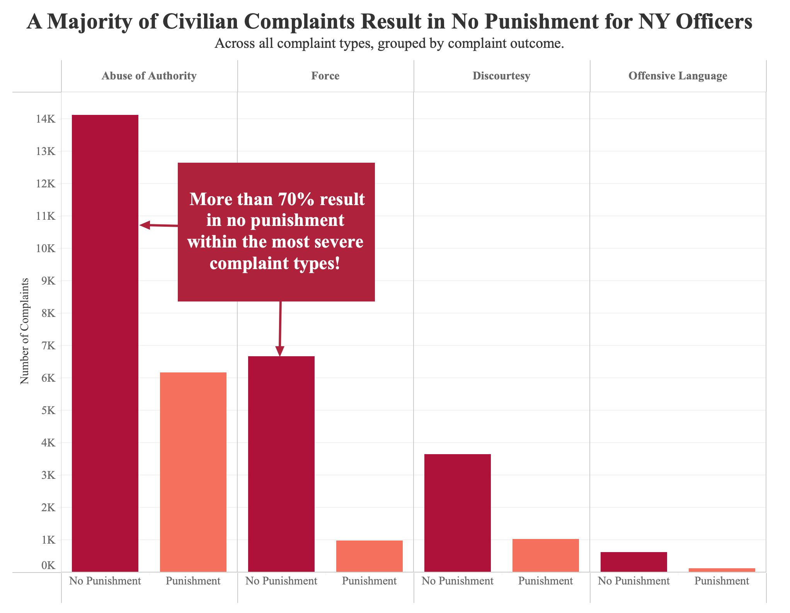
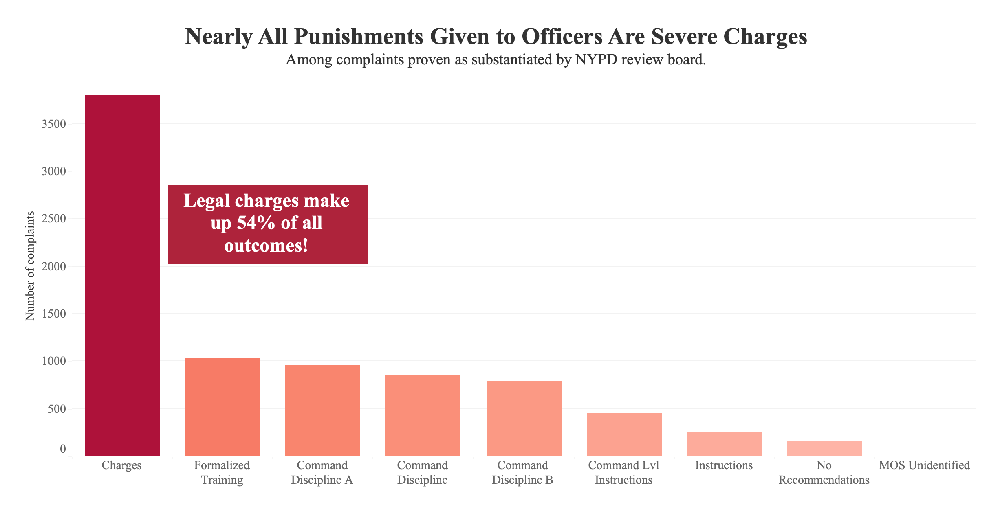

Proposition: Most civilian complaints against NYPD officers result in no disciplinary action.
For the Proposition

Design Decisions and Rationale:
-
Group Unsubstantiated and Exonerated together as "No Punishment." −1.5
- We grouped “Unsubstantiated” and “Exonerated” into a single “No Punishment” category to foreground the institutional outcome that matters most to the audience—whether an officer faces consequences—rather than the procedural distinction behind that outcome. This aggregation simplifies the cognitive load and makes the pattern immediately legible: across complaint types, the majority of cases result in no disciplinary action.
- We considered alternatives such as separating “Unsubstantiated” and “Exonerated” into distinct bars, using a neutral or diverging color palette, and ordering bars by magnitude instead of fixed positioning. We ultimately chose the current design because it prioritizes clarity, making the visualization more immediately persuasive, even at the cost of some detail and neutrality.
-
Saturated red for "No Punishment," pale pink for "Punishment." −0.5
- We used a saturated red for “No Punishment” and a lighter pink for “Punishment” to draw immediate visual attention to the dominant outcome. While red conventionally signals severity or urgency, here it intentionally emphasizes the prevalence of no punishment, reinforcing the chart’s central claim. Placing “No Punishment” consistently on the left further supports rapid comparison across panels by aligning the dominant category in a predictable position.
-
Categories of complaint severity are placed in order. −0.5
- We arranged the complaint types from more severe (e.g., “Abuse of Authority,” “Force”) to less severe (e.g., “Discourtesy,” “Offensive Language”) to impose a meaningful structure on the x-axis. This ordering allows viewers to interpret patterns across a gradient of severity rather than as unrelated categories. By doing so, the visualization reinforces the title’s claim more persuasively: even as the seriousness of allegations increases, the prevalence of “No Punishment” remains high. This makes the pattern feel systematic rather than incidental.
-
The annotation −1
- The annotation acts as a narrative anchor, explicitly guiding the viewer to the key takeaway in the most severe complaint categories. We also added arrows pointing out of the annotation box and pointing towards bars of no punishment but with severe charges. This worked well in making the message unmistakable and reducing the effort required to interpret the chart. However, the annotation and color choice together may come across as overly leading, potentially reducing perceived neutrality.
- We also considered grouping complaint types by severity (e.g., pairing “Abuse of Authority” and “Force” as more severe categories, and “Discourtesy” and “Offensive Language” as less severe ones) through additional color encoding or panel grouping. This could have helped emphasize differences in outcomes across levels of severity and added another layer of structure to the visualization. However, we chose not to implement this because introducing another color dimension risked overloading the visual encoding and competing with the primary comparison between “No Punishment” and “Punishment.” Maintaining a simpler color scheme ensured that the viewer’s attention remained focused on the central message.
Against the Proposition

Design Decisions and Rationale:
-
Filter the dataset to substantiated cases only. −1.5
- We filtered the dataset to include only substantiated complaints, meaning cases where the CCRB confirmed misconduct. This changes the focus from "how does the system respond to every complaint?" to "how does the system respond when wrongdoing is confirmed?" This makes the disciplinary action easier to see. By leaving out about 25,000 unsubstantiated and exonerated cases, the chart becomes simpler, but it also omits three-quarters of the data. Many of these excluded cases are the ones readers might care about most, where the board could not gather enough evidence to reach a finding, rather than those in which the officer was cleared. The filter is not obvious on the chart unless someone notices that the y-axis stops near 4,000 instead of 25,000.
- We considered keeping the full dataset and highlighting the substantiated cases within it, but the broader view obscured the message we wanted to convey.
-
Title: "Nearly All Punishments Given to Officers Are Severe Charges." −1.0
- The title sums up the chart's ranking in a bold statement. Charges account for 46% of substantiated complaints, so it is not literally "nearly all." However, no other outcome comes close, since Charges is nearly four times as large as the next-largest bar. The wording uses strong language instead of being exact, giving viewers the main point before they look at the bars.
- We considered a more accurate title like "Charges Are the Most Common Disciplinary Outcome," but it felt too descriptive rather than argumentative, so we accepted the trade-off. We also considered including the 46% figure in the title, but the precise number made the headline feel like a description rather than an argument.
-
Sort outcomes in descending order by count. +1.0
- We sorted disciplinary outcomes from largest to smallest, the conventional ordering for a categorical bar chart. This places Charges on the far left as the main visual anchor, allowing viewers to quickly compare the sizes. This sorting would be the standard choice for any neutral analysis of this data, so it adds credibility rather than persuasion.
- We considered grouping the outcomes into severity tiers and color coding them, but that would have meant inventing a hierarchy that the CCRB labels do not actually contain, so we kept the conventional sort.
-
Annotation: "Legal charges make up 54% of all outcomes!" −0.5
- The callout box tells the viewer what to take away from the chart. Instead of letting the reader study the bars and reach their own conclusion, the annotation hands them the answer. The 54% number is the chart's headline statistic, and the exclamation point makes the claim feel urgent and turns it into an argument rather than a neutral observation. Most viewers will accept this number at face value without checking it against the rest of the chart, which is what gives the callout most of its persuasive power.
- We also considered adding an arrow from the annotation to the Charges bar, but decided not to. Because the annotation box shares the same color as the Charges bar, they are visually linked without the need for an arrow. Adding one would over-explain the point and clutter the design.
Final Reflection
The most straightforward part of this project was designing the "For the Proposition" visualization, where the data naturally supported our claim. Grouping "Unsubstantiated" and "Exonerated" cases into a single "No Punishment" category was intuitive because it emphasized the institutional outcome where most claims did not lead to any discipline. The "Against the Proposition" visualization was more challenging because the underlying data shows that Charges make up most disciplinary outcomes, but that argument required us to make a visualization where that felt more drastic than it seems. To do this we filtered down to only substantiated cases, roughly one quarter of the full dataset.
What surprised us most was how little visual deception was needed to produce two convincing visualizations from the same dataset. Most of our deceptive choices were textual or transformational rather than graphical. For example with a title that overstates, an annotation with an exclamation point, and filters buried in the subtitles. Neither chart uses a truncated axis or a distorted scale.
This project has led us to define an ethical visualization as a visualization that doesn’t display artificial data and is transparent about the decision it makes. The line we would draw between persuasive choices and misleading choices comes down to reversibility. For example, if a reader can recover the full picture from what is shown, the choice is more persuasive but if information has been permanently hidden from them the choice is more misleading. Sorting bars in descending order is persuasive but reversible but filtering out 75% of the dataset is more deceptive. Annotations that guide interpretation are persuasive but annotations that are hard to understand without the full data would cross into deception. By that standard, both of our visualizations contain a couple choices we would say are deceptive.